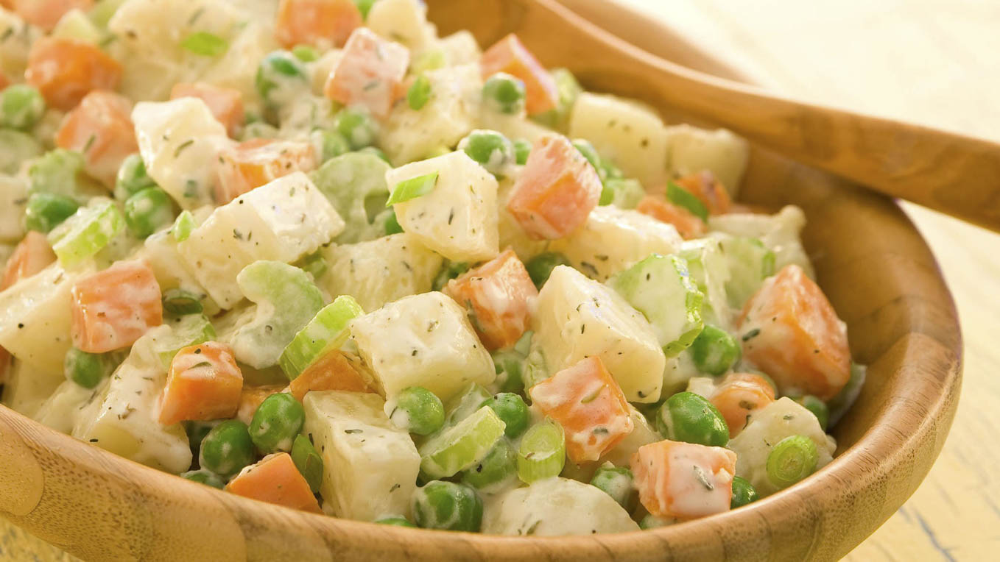

Primer Plato
Ensaladilla Rusa
Indice
Ingredientes
- 4 Patatas
- 2 zanahorias medianas
- Mayonesa
- 2 tallos de apio rebanados
- 1 cebollin rebanado
- pimienta negra molida
- hojas de tomillo
Paso a paso
- Cocine las papas y las zanahorias en agua hirviendo con sal en una cacerola grande a fuego medio alto durante 10 minutos o hasta que estén tiernas cuando las pinche con un tenedor. Agregue los chícharos cuando falten 5 minutos para que estén listas. Escurra bien y enfríe levemente.

- Mezcle la mayonesa, la crema, la sal, el tomillo y la pimienta en un recipiente mediano hasta incorporarlos completamente. Agregue el apio y el cebollín a las verduras cocidas y mezcle bien. Agregue la mayonesa preparada y revuelva suavemente para cubrir bien. Tape.

- Refrigere la ensalada hasta servir.
Resultado final
